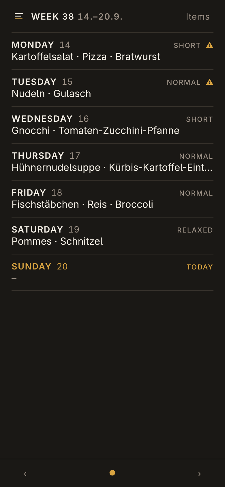
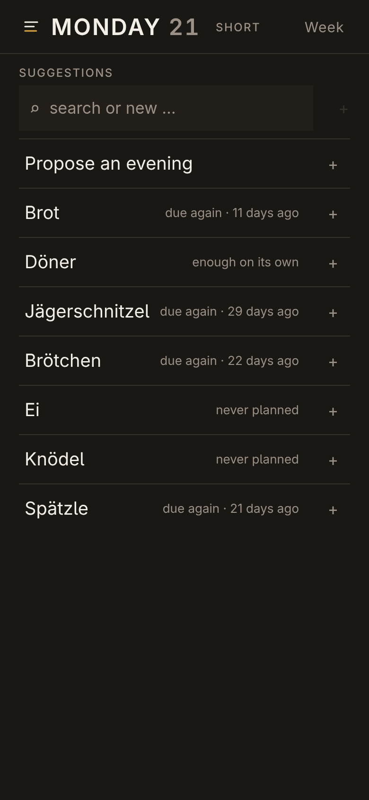
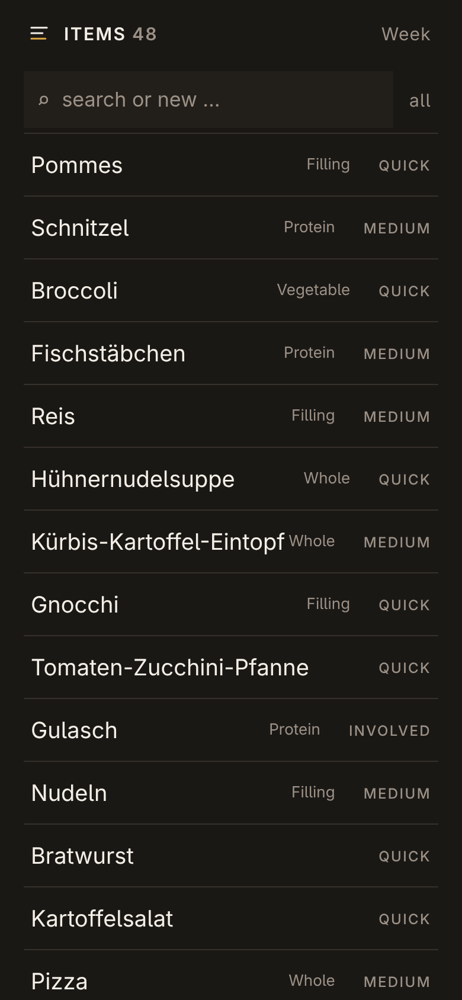

Weekly meal planning for a household. An evening is a set of items, not a dish —
potatoes, broccoli and bratwurst is one meal for everyone at the table, and whoever does not want
an item leaves it out. The app suggests, it never decides: every slot is
overwritable, every warning is a hint.
Three screens

The week. Seven evenings on one phone screen, no scrolling. Plate, effort
level, and a warning when an evening asks for more time than the weekday has.

One evening. One tap adds, one tap removes, written immediately. Every
suggestion carries its reason in plain words — never a score.

The items. Built by hand and kept honest: what part an item plays on a
plate, how much work it is, and what is paused.
How it suggests
Rhythm, not recency. Every item keeps its own cadence, read off its own history —
bread after three days and a roast after a month are both due.
Only combinations that were eaten. A proposed evening grows through plates the
household has actually had, never by assembling parts that have never met.
Time is first class. Each weekday has an effort level, and an evening that asks for
more says so — as a hint, never a veto.
Nothing is hidden. The worst item in the list still shows up; it just shows up last.
Running it
Bun, SQLite and TypeScript, auril.js on the front.
One language, one database, one process — no build step and no runtime dependencies.
bun src/server.ts # http://localhost:4173
TABLE_SIX_LANG=en bun src/server.ts # English instead of German
The interface speaks German or English, one language per deployment.